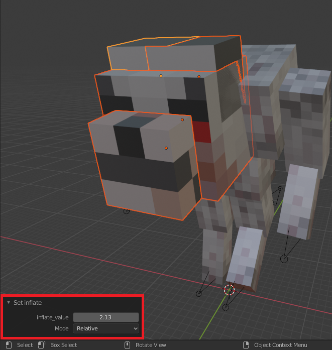
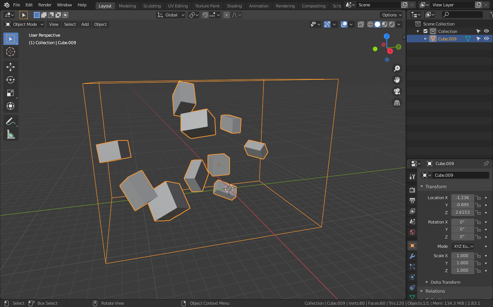
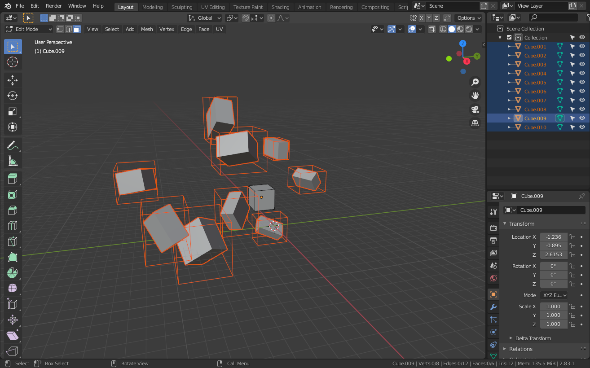
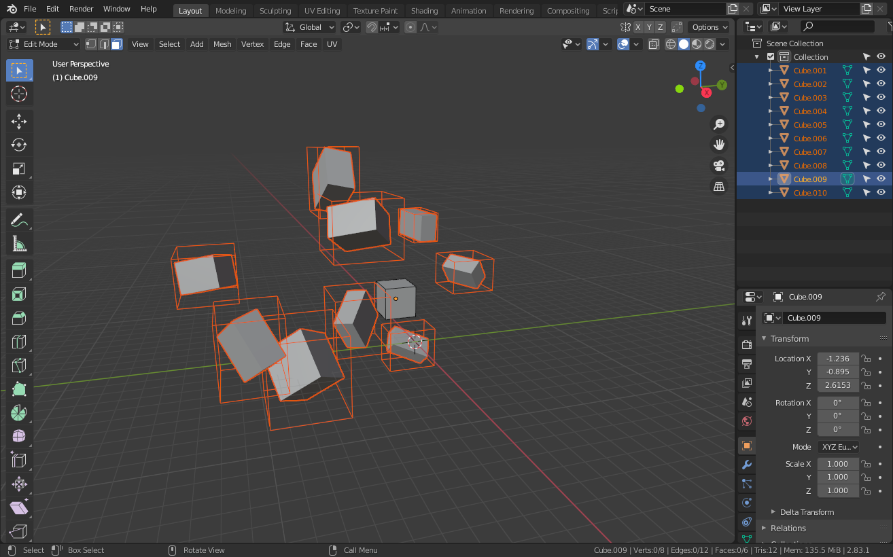

GUI
Mcblend adds new elements to Blender GUI:
- Mcblend tab on sidebar,
- Mcblend: UV-groups and Mcblend: Animation Events tab in the Scene Properties,
- Mcblend: Object Properties in the Object Properties when you have a mesh selected,
- Mcblend: Model Properties, Mcblend: Render Controllers and Mcblend: Animations in the Object Properties when the active object is an armature.
- Export bedrock Model and Export Bedrock Animation in the export menu,
- Import Bedrock Model in the import menu.
Sidebar
The sidebar (the menu that you can open by pressing N button by default)
gives access to some of the operators and has a panel which lets
you quckly import models of the entities from resource packs.
Resurce Pack panel
The resource pack panel lets you connect a resource pack to a project. When you have a resource pack connected to your project you can easily an entity from a list and import all of its models (if it has multiple) and select the texture variant and materials that you can use. The example on the sidebar image (above) is more complicated than most of the models that you would normally import, in most cases Mcblend will be able to automatically detect which model, material and texture should be used but in some cases it's impossible to tell without analysing behavior of the entity when molang queries are used. In these situations additional user input is required.
Operators
UV-mapping panel
- Fix model UV-mapping - operator used to fix invalid UV-mapping of the cubes of the model. All faces of the cubes in the Minecraft model must be rectangular and have certain rotation. This operator ensures that this conditions are true. It's particularly useful when you get an error message which says that certain object has invalid UV-mapping and is impossible to export. The operator fixes all of the cubes of the model and can be used only when the active object is an armature.
- Set the UV group - adds selected objects to one of the existing UV-groups. This operator can be used when at least one mesh is selected and at least one UV group has been created in your project.
- Clear UV group - oposite to "Set the UV group". It removes the UV group from the selected objects.
Mesh Transformations panel
- Inflate - Inflates the selected object using Minecraft inflate property. Running this operator opens a panel in the bottom left corner of the 3D viewport. You can use this panel to adjust the "inflate" value. 
- Round dimensions -Rounds the dimensions of the object in such way that they become integers in exported Minecraft model.
-
Separate and align cubes - Separate cubes can detect cubes grouped in a single mesh and separate them into multiple objects. Unlike the vanilla Blender operator (Mesh -> Separate), the Separate cubes operator from Mcblend is designed for working with cuboids and can detect their rotations. This is important because meshes in Mcblend must be aligned with the rotations of the objects that store them in order to make Mcblend work properly. Additionally if you happen to have a mesh with single cube rotated in edit mode (mesh not aligned to object rotation), you can use this operator to fix the problem. The operator won't create new objects if there is only one cube in the mesh but it will fix the rotation problem. Images below show the difference between applying Separate cubes and Mesh -> Separate operators: Before separating cubes  Objects separated with Mcblend
 Objects separated using default Blender operator

Objects separated using default Blender operator
 -
Prepare physics simulation - this button automatically creates objects which can be used for physics simulation. The simulation starts one frame after the selected frame. It adds ragdoll effect to the model. Newly created objects are added into 3 separate new collections: Rigid Body (a group with rigid body objects with the same shape as the original model), Rigid Body Constraints (a group of empties with rigid body constraints that connect parts of the simulated objects together) and Bone Parents (a group of objects which follow the rigid body and make the original model follow the simulation).
Scene properties
Scene properties tab has two new panels:
- Mcblend: UV-groups - used for creating and customizing UV-groups.
- Mcblend: Animation Events - used for adding events for creating sound- and particle-effects animations.
Object properties (mesh)
This is the panel that you cane see when you open object properties of a mesh.

Mesh type (dropdown list) - Cube or Poly mesh. Decides if the object should be exported as a cube or polymesh. Objects with non-cuboid shapes must be polymesh type or you won't be able to export them.
Note
Polymesh models are still experimental Minecraft feature and they could even be removed from Minecraft. Experimental features are not allowed on marketplace so keep that in mind if you're making a map for marketplace.
UV Group (textfield) - displays the UV-group name of the selected object.
Mirror - the mirror property is used only during the UV-mapping. It affects the mapping of the faces of the object in a same way as Minecraft mirror property of a cube.
Inflate - stores the Minecraft inflate property value of the cube.
Note
Editing the Inflate value through this panel does not change the dimensions of the object, but it does change the inflate value in the exported object. If you want to inflate/deflate the object you should use the inflate operator from the sidebar.
Min UV bound - this property is used during UV-mapping. It defines the minimal space on the texture used for a cube. If cube has width, height or depth lower than one unit of length, this property can be used to make sure that every face will gett some space on the texture. Normally in this case a the size of the cube would be rounded down to 0 during UV-mapping and some of the faces of the cube wouldn't get any space on the texture.
Object properties (armature)
This is the panel that you can see when you open object properties of an armature.
Mcblend: Model properties - this panel has some of the basic properties of the minecraft model (like visible bounds widht and height) and someproperties used for texture generation.
- Allow texture expanding - allows changing the texture width and height during UV-mapping.
- Generate Texture - generates template texture during UV-mapping (UV-mapping without this option sellected will change the UV of the model but won't generate any texture file).
- Template resolution defines the size of the texture. The real resolution of the generated texture image is equal to texture width and hight multiplied by texture resolution.
- Set minecraft UV button - generates the UV map and texture of the model based on the setting from the properties above.
To perform the UV-mapping fill in the form and press the "Set Minecraft UVs" button.
Note
After the UV mapping, you can still go to the UV editor and move everything to your liking. This operator tries to arrange the UVs of the selected objects on the texture space using the basic non-per-face Minecraft UV-mapping. If you move the UV in such a way that it cannot be mapped in standard Minecraft UV-mapping way than mcblend will detect that and uses per-face UV mapping.
Don't move individual vertices of the faces on the UV unless you know what you're doing. The faces on the UV must remain rectangles, or the UV of the exported model may have unexpected shapes.
Mcblend: Render Controllers
Tihs panel lets you quickly create materials for the model which will look very similar to models in Minecraft. You can add multiple render controllers to the model and in every render controller you can select single texture and multiple materials assigned to the model by name patterns. When you finish setting up the render controller you can use the "Apply materials" button to automatically create the materials for preview in blender. If you add multiple textures and render controllers to your model they'll be stacked on top of each other in a same way as in Minecraft.
Mcblend: Animations
The animations panel lets you quickly switch between animations. The animations in Mcblend are connected to NLA tracks of the armature. Switching the animation in the Animations menu will switch the active NLA tracks.
- New animation - creates new animation. You can't use this operator while editing an action of the armature. If you want to create a new action you need to stash the action first.
- Remove animation - Removes currently active animation.
- Select animation (dropdown list) - Lets you select one of the previously created animations.
- Name - Sets the name of the animation.
- Skip rest poses - During exporting the animation with this checkbox selected will skip adding unnecessary frames which don't affect the movements of the models. In most cases it's recommended to use this option.
- Export as pose - Instead of exporting animation the exporter will export a single frame (a pose of the model).
- Loop - this property is the same as the loop property from Minecraft animation files. There are three options "true", "false" and "hold_on_last_frame"
- Anim Time Update - this property is exactly the same as the anim_time_update property from Minecraft animation files. You should either leave it empty (if you don't want to have "anim_time_update" in your animation) or put molang expression in it. It doesn't affect the animation in Mcblend. It only changes a single property of the exported file.
- Frame start - the first frame of the animation.
- Frame end - the last frame of the animation.